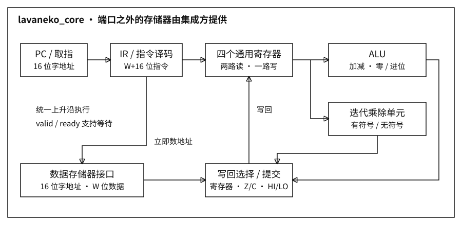

| 项目 | 实现 |
|---|---|
| 寄存器 | R0–R31，32 个 × 32 位；R0 也可写 |
| 指令 | 32 位定长，自定义 R / I / J 格式，20 个操作码 |
| PC / 地址 | 16 位字地址；程序与数据存储器各 65,536 字 |
| 执行 | 单发射、顺序提交、统一上升沿；valid / ready 等待存储器 |
| 状态 | Z、C、HI、LO、MD_ERROR |
当前为单通道整数核心。尚无 SIMD、浮点和图形流水线。
| 格式 | 32 位排列（高位在左） |
|---|---|
| R 寄存器 | 操作码[6] | Rd[5] | Ra[5] | Rb[5] | 0[11] |
| I 立即数 | 操作码[6] | Rd/Rs[5] | Ra[5] | imm16[16] |
| J 跳转 | 操作码[6] | 0[10] | target16[16] |
25:21 表示第 25 位到第 21 位，共 5 位。R0 编号 00000，R31 编号 11111。
| 指令 | imm16 的解释 |
|---|---|
| LDI / ADDI | 符号扩展，范围 −32768 到 32767 |
| LOAD / STORE | 符号扩展后与基址相加；取低 16 位作字地址 |
| ORI | 零扩展至 32 位，按位或 |
| LUI | 放入高 16 位，低 16 位清零 |
| JUMP / JZ | 低 16 位直接给出目标指令字地址 |
LUI R31, 0x1234 → 0x12340000 ORI R31, R31, 0xABCD → 0x1234ABCD
LDI R10, 32 STORE R31, [R10+2] → RAM[34] = R31 LOAD R16, [R10+2] → R16 = RAM[34]
STORE 的数据源 Rs 使用 25:21 字段。每个数据字为 32 位，地址单位不是字节；越界按低 16 位回绕。
d / a / b / s 表示对应寄存器编号，i 表示立即数或跳转目标。每行完整表示 32 位指令。
| 指令 | 二进制格式 |
|---|---|
NOP | 000000 00000 00000 00000 00000000000 |
LDI Rd, imm16 | 000001 ddddd 00000 iiiiiiiiiiiiiiii |
LUI Rd, imm16 | 000010 ddddd 00000 iiiiiiiiiiiiiiii |
ORI Rd, Ra, imm16 | 000011 ddddd aaaaa iiiiiiiiiiiiiiii |
ADDI Rd, Ra, imm16 | 000100 ddddd aaaaa iiiiiiiiiiiiiiii |
ADD Rd, Ra, Rb | 000101 ddddd aaaaa bbbbb 00000000000 |
SUB Rd, Ra, Rb | 000110 ddddd aaaaa bbbbb 00000000000 |
CMP Ra, Rb | 000111 00000 aaaaa bbbbb 00000000000 |
LOAD Rd, [Ra+imm16] | 001000 ddddd aaaaa iiiiiiiiiiiiiiii |
STORE Rs, [Ra+imm16] | 001001 sssss aaaaa iiiiiiiiiiiiiiii |
JUMP target16 | 001010 00000 00000 iiiiiiiiiiiiiiii |
JZ target16 | 001011 00000 00000 iiiiiiiiiiiiiiii |
HALT | 001100 00000 00000 00000 00000000000 |
MULU Rd, Ra, Rb | 001101 ddddd aaaaa bbbbb 00000000000 |
MUL Rd, Ra, Rb | 001110 ddddd aaaaa bbbbb 00000000000 |
DIVU Rd, Ra, Rb | 001111 ddddd aaaaa bbbbb 00000000000 |
DIV Rd, Ra, Rb | 010000 ddddd aaaaa bbbbb 00000000000 |
MFLO Rd | 010001 ddddd 00000 00000 00000000000 |
MFHI Rd | 010010 ddddd 00000 00000 00000000000 |
MDSTAT Rd | 010011 ddddd 00000 00000 00000000000 |
只有 ADDI、ADD、SUB、CMP 更新 Z/C；C 在减法中表示无借位。ORI、LDI、LUI、访存、跳转和乘除保持标志。
| 乘除状态 | 结果 |
|---|---|
| MD_ERROR=0 | 成功；HI/LO 更新，Rd=LO |
| MD_ERROR=1 | 除零；HI=LO=0，Rd 保持，继续执行 |
| MD_ERROR=2 | 有符号 MIN/-1；处理同上 |
MUL/MULU 的 HI:LO 为完整 64 位乘积。DIV/DIVU 的 LO 为商，HI 为余数；有符号除法朝零截断。
| PC | 指令 | 32 位机器字 |
|---|---|---|
| 0 | LDI R0, 1 | 04000001 |
| 1 | LDI R1, 1 | 04200001 |
| 2 | ADD R2, R0, R1 | 14400800 |
| 3 | HALT | 30000000 |
LDI 直接使用立即数写回通路，不经过加法。第二条写入 R1=1。
| 指令 | 无等待时的核心拍数 |
|---|---|
| 运算 / 跳转 / HALT | 2：取指、执行提交 |
| LOAD / STORE | 3：增加数据握手提交 |
| 正常乘除 | 36：取指、单元运算、提交 |
| 错误除法 | 4 |
6,499 次提交分别运行有等待与无等待；检查全部 32 个寄存器和最终内存。另有 659 次乘除检查、寄存器组读写组合、复位及 PC 回绕测试。仿真和通用综合通过，未执行 Vivado 时序验证或板测。